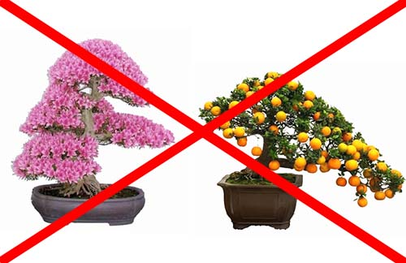

Select the right Tree
A major reason for a first bonsai to die is due to the fact that the tree is inadequate to the climate.
We recommend you use our tree recommendation tool to select the right bonsai for you here.
| Indoor bonsai doesn't always mean indoor bonsai | Avoid certain species for indoor |
|---|---|
|  | |
| An indoor bonsai DOESN"T mean it is adequate for all indoor conditions.
"Indoor" applies to Temperate climates and rooms without constant temperature. |
Only tropical or semi-tropical trees are recommended in constant temperature rooms.
Flower and fruit bonsai are not recommended indoor. |